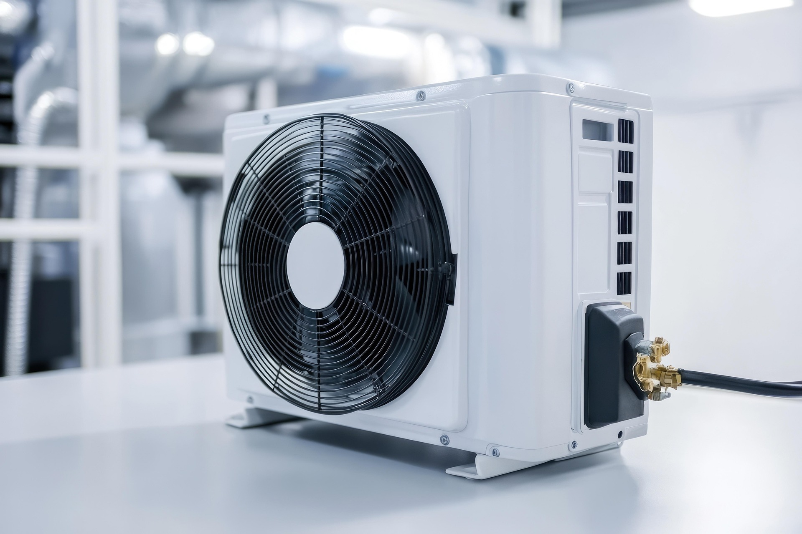
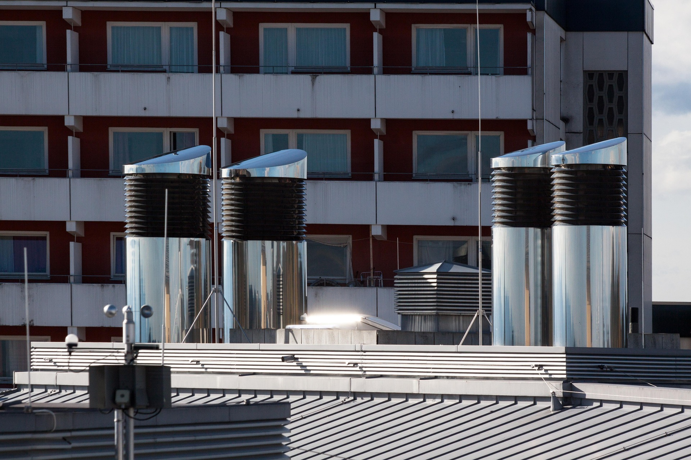
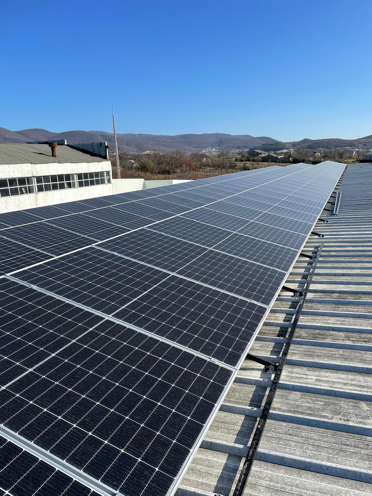
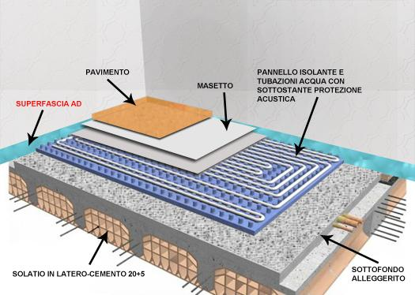
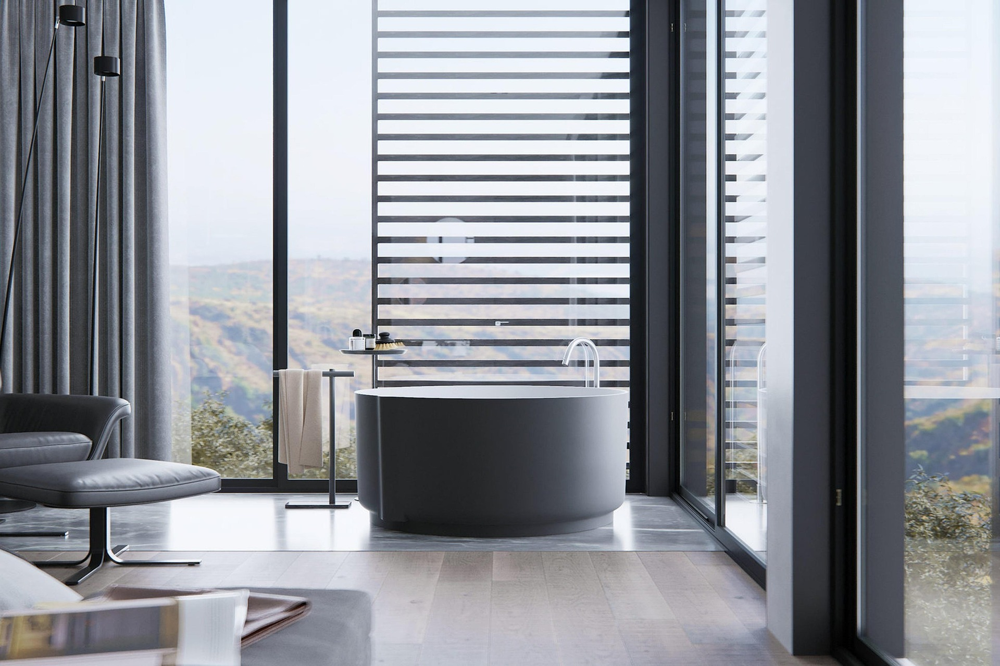

A Pietragalla (PZ)
Qualità e professionalità al tuo servizio
Termoidraulica Pietrafesa Donatello offre competenze eccellenti nell'installazione e manutenzione di impianti di condizionamento, riscaldamento, idraulici e termoidraulici.
Grazie a soluzioni tecniche all'avanguardia, garantiamo il massimo comfort termico e idrico, abbinato a un'efficienza energetica superiore.
- Professionalità e attenzione ai dettagli
- Servizi completi per ogni esigenza domestica
Servizi
Impianti termici e sanitari con servizi completi e personalizzati: dalla prima analisi del fabbisogno alla consegna documentata, con manutenzioni programmate che prolungano la vita degli impianti e contengono i consumi.

Climatizzazione e pompe di calore
Progettazione e posa di split, multi-split e sistemi canalizzati; sostituzione di generatori datati con soluzioni ad alta efficienza; bilanciamento dei fluidi e regolazione degli scenari di comfort per stagioni diverse.
- Diagnosi acustica e posizionamento unità esterne
- Coordinamento con isolamento e involucro edilizio
- Contratti di manutenzione ordinaria e straordinaria

Impianti idraulici e idrosanitari
Reti di distribuzione, scarico, antincendio di base civile dove previsto, adduzione e derivazione dal punto di consegna dell'acqua: lavoriamo su nuove realizzazioni e ristrutturazioni con attenzione alle norme igieniche e alla accessibilità degli organi di manovra.
- Rilievi in cantiere e preventivi parametrati
- Coibentazioni, tracciati e sostenibilità delle perdite
- Collaudi e consegna schemi di manutenzione

Trattamento aria e ventilazione
Ventilazione meccanica controllata, estrazione da bagni e cucine professionali, recupero di calore dove consigliato dal progetto: meno umidità stagnante, meno muffe, aria rinnovata senza sprechi eccessivi.
- Portate calcolate su volumetrie e occupazione
- Filtri, accessori e piani di sostituzione
- Integrazione con climatizzazione e caldaie

Fotovoltaico e coperture
Stringhe, inverter, monitoraggio base: dimensioniamo la potenza installata in funzione dei consumi elettrici e del profilo di autoconsumo, con attenzione agli ombreggiamenti e alla struttura della copertura.
- Analisi preliminare di irraggiamento e vincoli edilizi
- Integrazione architettonica e canaline
- Supporto alla documentazione per connessione in rete

Riscaldamento a pavimento
Progettiamo e installiamo sistemi radianti a pavimento per nuove costruzioni e ristrutturazioni, con distribuzione uniforme del calore e temperature di mandata più basse rispetto ai sistemi tradizionali.
- Dimensionamento circuiti e bilanciamento idraulico
- Integrazione con pompe di calore e caldaie a condensazione
- Collaudo, messa in servizio e piano manutentivo

Pannelli radianti
Realizziamo impianti con pannelli radianti a parete e soffitto per ambienti civili, ottimizzando comfort termico, tempi di risposta e consumi stagionali.
- Soluzioni per abitazioni e piccoli condomìni
- Regolazione a zone e controllo puntuale delle temperature
- Assistenza su avviamento e ottimizzazione impianto

Gas tecnici e uso domestico
Impianti per il trasporto e l'utilizzazione del gas negli edifici a partire dal punto di consegna del distributore: reti, terminali, verifiche periodiche e adeguamenti normativi per cucine, generatori e ambienti tecnici.
- Progetti in sicurezza e coordinamento con fornitori di rete
- Rilievi di tenuta e controllo componenti
- Assistenza in fase di collaudo e avviamento

Riscaldamento e efficienza
Generatori a condensazione, ibridi, integrazione con solare termico o pompe di calore: ottimizziamo regolazione climatica, valvole termostatiche e circolatori per ridurre i consumi mantenendo il comfort.
- Riqualificazioni con detrazioni e bandi quando applicabili
- Centraline e sonde: taratura e messa a punto
- Libretti impianto e registrazione interventi

Sanitari
Progettazione e installazione di impianti sanitari e bagni completi: impiantistica idraulica, posa sanitari e finiture curate per un risultato funzionale e durevole.
- Progetto estetico e tecnico coordinato
- Materiali premium e posa accurata
- Consegna completa con collaudo impianti
Per la tua casa
Ristrutturazioni, sostituzione generatori, climatizzazione e impianti idraulici: adattiamo tempistiche, accessi e soluzioni tecniche alle esigenze di famiglie e piccoli condomìni.
Residenziale e piccoli condomìni
Ristrutturazioni con impianti idraulici e termoidraulici, sostituzione caldaie, climatizzazione per singoli appartamenti e impianti sanitari che rispettano spazi abitativi e finiture.
- Interlocuzione diretta con famiglie e amministratori
- Interventi programmati in orari concordati
- Documentazione per pratiche condominiali
Perché affidarsi a Termoidraulica Pietrafesa
Affidarsi a Termoidraulica Pietrafesa Donatello significa scegliere professionalità, qualità e attenzione ai dettagli su ogni intervento.
Competenze tecniche
Installazione e manutenzione di impianti di condizionamento, riscaldamento, idraulici e termoidraulici con soluzioni aggiornate e collaudate sul campo.
Comfort ed efficienza
Soluzioni tecniche all'avanguardia per il massimo comfort termico e idrico, con attenzione all'efficienza energetica e ai consumi.
Servizi completi
Impianti termici e sanitari con interventi personalizzati per soddisfare ogni esigenza domestica, dalla progettazione alla manutenzione programmata.
Radicamento locale
Attività a Pietragalla (PZ) con disponibilità Lun–Sab 08:00–20:00 e contatto diretto via telefono e WhatsApp per urgenze e preventivi.
Come lavoriamo
Un flusso chiaro riduce errori in cantiere e allinea aspettative economiche: dalla prima richiesta alla consegna, ogni fase ha un output documentale o condiviso con il cliente.
-
01
Sopralluogo e fabbisogno
Rilievo spazi, consumi attesi, vincoli architettonici e priorità (rumorosità, estetica, tempi). Individuiamo criticità su reti esistenti e sul punto di consegna di acqua, gas ed energia elettrica.
-
02
Proposta tecnica ed economica
Scheda macchina, alternative su marche e classi energetiche, tempi di posa e modalità di accesso. Per interventi complessi, pianifichiamo le attività a cruscotto con il committente.
-
03
Esecuzione e coordinamento
Squadre con DPI, ordine e pulizia del cantiere, prove intermedie (tenuta, elettrici di comando, scarichi). Aggiornamenti di stato e gestione varianti solo dopo condivisione.
-
04
Collaudo, formazione e manutenzione
Avviamento, consegna libretti e registro interventi dove richiesto. Piani di manutenzione ordinaria con promemoria stagionali (es. bollino, filtri, controllo combustione).
Tipologie di intervento
Sintesi delle commesse che affrontiamo con maggiore frequenza: ogni cantiere mantiene specificità tecniche, ma il metodo di analisi e consegna resta uniforme per qualità e sicurezza.
Ristrutturazioni complete
Demolizioni selettive, nuovi tracciati idraulici, climatizzazione multi-split, VMC e centralini elettrici coordinati con l'impresa edile per evitare sovrapposizioni e ritardi.
Sostituzione generatori
Caldaie a condensazione, pompe di calore ibride, adeguamento camini e evacuazioni: gestiamo avviamenti, registrazioni e verifiche di combustione con strumentazione dedicata.
Domande frequenti
Risposte orientative: in fase di preventivo approfondiamo sempre il caso specifico con sopralluogo e documentazione fotografica.
La sede è in Corso Italia, 10 — 85016 Pietragalla (PZ).
Lunedì–sabato 08:00 – 20:00. Domenica chiuso.
Sì, al numero 348 6927870.
Tra i prodotti e i servizi disponibili ci sono:
- Sanitari
- Impianti idraulici e termoidraulici
- Impianti di riscaldamento
- Impianti di condizionamento
- Impianti termici
Chiamate o scrivete su WhatsApp al 348 6927870, indicando indirizzo e tipologia di intervento. Foto e planimetrie, se disponibili, accelerano la prima stima.
Chi siamo
A Pietragalla (PZ), Termoidraulica Pietrafesa Donatello unisce qualità e professionalità al tuo servizio. L'azienda si occupa di impianti termici e sanitari, assicurando servizi completi e personalizzati per soddisfare ogni esigenza domestica.
Contatti
Contatti
-
Sede
Corso Italia, 10
85016 Pietragalla (PZ) - Telefono
Dati aziendali
Ragione sociale
Termoidraulica Pietrafesa
di Donatello Pietrafesa
Sede
Corso Italia, 10
85016 Pietragalla (PZ)
P. IVA
02188200766
Codice Fiscale
PTRDTL80H26G942R